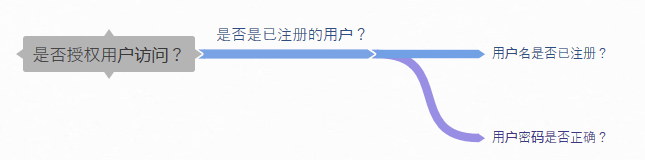
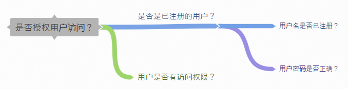

- 00 开篇词 你写的每一行代码，都是你的名片.md.html
- 01 从条件运算符说起，反思什么是好代码.md.html
- 02 把错误关在笼子里的五道关卡.md.html
- 03 优秀程序员的六个关键特质.md.html
- 04 代码规范的价值：复盘苹果公司的GoToFail漏洞.md.html
- 05 经验总结：如何给你的代码起好名字？.md.html
- 06 代码整理的关键逻辑和最佳案例.md.html
- 07 写好注释，真的是小菜一碟吗？.md.html
- 08 写好声明的“八项纪律”.md.html
- 09 怎么用好Java注解？.md.html
- 10 异常处理都有哪些陷阱？.md.html
- 11 组织好代码段，让人对它“一见钟情”.md.html
- 12丨组织好代码文件，要有“用户思维”.md.html
- 13 接口规范，是协作的合约.md.html
- 14 怎么写好用户指南？.md.html
- 15 编写规范代码的检查清单.md.html
- 16丨代码“规范”篇用户答疑.md.html
- 17 为什么需要经济的代码？.md.html
- 18丨思考框架：什么样的代码才是高效的代码？.md.html
- 19 怎么避免过度设计？.md.html
- 20 简单和直观，是永恒的解决方案.md.html
- 21 怎么设计一个简单又直观的接口？.md.html
- 22丨高效率，从超越线程同步开始！.md.html
- 23 怎么减少内存使用，减轻内存管理负担？.md.html
- 24 黑白灰，理解延迟分配的两面性.md.html
- 25 使用有序的代码，调动异步的事件.md.html
- 26 有哪些招惹麻烦的性能陷阱？.md.html
- 27 怎么编写可持续发展的代码？.md.html
- 28 怎么尽量“不写”代码？.md.html
- 29 编写经济代码的检查清单.md.html
- 30丨“代码经济篇”答疑汇总.md.html
- 31 为什么安全的代码这么重要？.md.html
- 32 如何评估代码的安全缺陷？.md.html
- 33 整数的运算有哪些安全威胁？.md.html
- 34 数组和集合，可变量的安全陷阱.md.html
- 35 怎么处理敏感信息？.md.html
- 36 继承有什么安全缺陷？.md.html
- 37 边界，信任的分水岭.md.html
- 38 对象序列化的危害有多大？.md.html
- 39 怎么控制好代码的权力？.md.html
- 40 规范，代码长治久安的基础.md.html
- 41 预案，代码的主动风险管理.md.html
- 42 纵深，代码安全的深度防御.md.html
- 43 编写安全代码的最佳实践清单.md.html
- 44 “代码安全篇”答疑汇总.md.html
- Q&A加餐丨关于代码质量，你关心的那些事儿.md.html
- 结束语 如何成为一个编程好手？.md.html
- 捐赠
21 怎么设计一个简单又直观的接口？
我们前面聊过接口规范，开放的接口规范是使用者和实现者之间的合约。既然是合约，就要成文、清楚、稳定。合约是好东西，它可以让代码之间的组合有规可依。但同时它也是坏东西，让接口的变更变得困难重重。
接口设计的困境，大多数来自于接口的稳定性要求。摆脱困境的有效办法不是太多，其中最有效的一个方法就是要保持接口的简单直观。那么该怎么设计一个简单直观的接口呢？
从问题开始
软件接口的设计，要从真实的问题开始。
一个解决方案，是从需要解决的现实问题开始的。要解决的问题，可以是用户需求，也可以是现实用例。面对要解决的问题，我们要把大问题分解成小问题，把小问题分解成更小的问题，直到呈现在我们眼前的是公认的事实或者是可以轻易验证的问题。
比如说，是否可以授权一个用户使用某一个在线服务呢？这个问题就可以分解为两个小问题：
该用户是否为已注册的用户？
该用户是否持有正确的密码？
我们可以使用思维导图来描述这个分解。
- 分解问题时，我们要注意分解的问题一定要“相互独立，完全穷尽”（Mutually Exclusive and Collectively Exhaustive）。这就是MECE原则。使用MECE原则，可以帮助我们用最高的条理化和最大的完善度理清思路。
如何理解这个原则呢？
先来说一下“相互独立”这个要求。问题分解后，我们要仔细琢磨，是不是每一个小问题都是独立的，都是可以区分的事情。
我们以上面的分解为例子，仔细看会发现这种划分是有问题的。因为只有已经注册的用户，才会持有正确的密码。而且，只有持有正确密码的用户，才能够被看作是注册用户。这两个小问题之间，存在着依赖关系，就不能算是“相互独立”。
我们要消除掉这种依赖关系。
变更后，就需要两个层次的表达。第一个层次问题是，该用户是否为已注册的用户？这个问题，可以进一步分解为两个更小的问题：用户持有的用户名是否已注册？ 用户持有的密码是否匹配？
该用户是否是已注册的用户？
a. 用户名是否已注册？
b.用户密码是否正确？
这种描述的思维导图，和上面的相比，已经有了很大的差别。
- 除了每一项都要独立之外，我们还要琢磨，是不是把所有能够找到的因素，都找到了？也就是说，我们是否穷尽了所有的内容，做到了“完全穷尽”？
你可能早已经注意到了上述问题分解的缺陷。如果一个服务，对所有的注册用户开放，上面的分解就是完备的。否则，我们就漏掉了一个重要的内容，不同的注册用户，可以访问的服务可能是不同的。也就是说如果没有访问的权限，那么即使用户名和密码正确也无法访问相关的服务。
如果我们把漏掉的加上，这个问题的分解可以进一步表示为：
该用户是否是已注册的用户？
a. 用户名是否已注册？
b.用户密码是否正确？
2.该用户是否有访问的权限？
- 完成上述的分解后，对于是否授权用户访问一个服务这个问题，我们就会有一个清晰的思路了。
为什么从问题开始？
为什么我们要遵循“相互独立，完全穷尽”的原则呢？
只有完全穷尽，才能把问题解决掉。否则，这个解决方案就是有漏洞的，甚至是无效的。
只有相互独立，才能让解决方案简单。否则，不同的因素纠缠在一起，既容易导致思维混乱，也容易导致不必要的复杂。
还有一个问题，我们也要清楚地理解。那就是，为什么要从问题开始呢？
从问题开始，是为了让我们能够找到一条主线。然后，围绕这条主线，去寻找解决问题的办法，而不是没有目标地让思维发散。这样，也可以避免需求膨胀和过度设计。
比如说，如果没有一条主线牵制着，按照面向对象编程的思路，我们看到“用户”两个字，马上就会有无限的联想。是男的还是女的呀？姓啥名谁呀？多大岁数了？家住哪儿啊？一系列问题都会冒出来，然后演化成一个庞大的对象。但事实上，对于上面的授权访问问题，我们根本不需要知道这些。
自然而来的接口
把大问题分解成小问题，再把小问题分解成更小的问题。在这个问题逐层分解的过程中，软件的接口以及接口之间的联系，也就自然而然地产生了。这样出来的接口，逻辑直观，职责清晰。对应的，接口的规范也更容易做到简单、稳定。
还记得我们前面说过的Java的命名规范吗？Java类的标识符使用名词或者名词短语，接口的标识符使用名词、名词短语或者形容词，方法的标识符使用动词或者动词短语。这背后的逻辑是，Java类和接口，通常代表的是一个对象；而Java的方法，通常代表的是一个动作。
我们在分解问题的过程中，涉及到的关键的动词和动词短语、名词和名词短语或者形容词，就是代码中类和方法的现实来源。比如，从上面的问题分解中，我们很容易找到一个基础的小问题：用户名是否已注册。这个小问题，就可以转换成一个方法接口。
我们前面讨论过这个接口。下面，我们再来看看这段使用过的代码，你有没有发现什么不妥的地方？
/**
* Check if the {@code userName} is a registered name.
*
* @return true if the {@code userName} is a registered name.
*/
boolean isRegisteredUser(String userName) {
// snipped
}
不知道你看到没有，这个方法的命名是不妥当的。
根据前面的问题分解，我们知道，判断一个用户是不是注册用户，需要两个条件：用户名是否注册？密码是否正确？
上面例子中，这个方法的参数，只有一个用户名。这样的话，只能判断用户名是不是已经被注册，还判断不了使用这个用户名的用户是不是真正的注册用户。
如果我们把方法的名字改一下，就会更符合这个方法的职能。
/**
* Check if the {@code userName} is a registered name.
*
* @return true if the {@code userName} is a registered name.
*/
boolean isRegisteredUserName(String userName) {
// snipped
}
如果你已经理解了我们前面的问题分解，你就会觉得原来的名字有点儿刺眼或者混乱。这就是问题分解带给我们的好处。问题的层层简化，会让接口的逻辑更直观，职责更清晰。这种好处，也会传承给后续的接口设计。
一个接口一件事情
前面，我们提到过一行代码只做一件事情，一块代码只做一件事情。一个接口也应该只做一件事情。
如果一行代码一件事，那么一块代码有七八行，不是也应该做七八件事情吗？怎么能说是一件事情呢？这里我们说的“事情”，其实是在某一个层级上的一个职责。授权用户访问是一件完整、独立的事情；判断一个用户是否已注册也是一件完整、独立的事情。只是这两件事情处于不同的逻辑级别。也就是说，一件事情，也可以分几步完成，每一步也可以是更小的事情。有了逻辑级别，我们才能分解问题，接口之间才能建立联系。
对于一件事的划分，我们要注意三点。
一件事就是一件事，不是两件事，也不是三件事。
这件事是独立的。
这件事是完整的。
如果做不到这三点，接口的使用就会有麻烦。
比如下面的这段代码，用于表示在不同的语言环境下，该怎么打招呼。在汉语环境下，我们说“你好”，在英语环境下，我们说“Hello”。
/**
* A {@code HelloWords} object is responsible for determining how to say
* "Hello" in different language.
*/
class HelloWords {
private String language = "English";
private String greeting = "Hello";
// snipped
/**
* Set the language of the greeting.
*
* @param language the language of the greeting.
*/
void setLanguage(String language) {
// snipped
}
/**
* Set the greetings of the greeting.
*
* @param language the greetings of the greeting.
*/
void setGreeting(String greeting) {
// snipped
}
// snipped
}
这里涉及两个要素，一个是语言（英语、汉语等），一个是问候语（Hello、你好等）。上面的这段代码，抽象出了这两个要素。这是好的方面。
看起来，有两个独立的要素，就可以有两个独立的方法来设置这两个要素。使用setLanguage()设置问候的语言，使用setGreeting()设置问候的问候语。看起来没什么毛病。
但这样的设计对用户是不友好的。因为setLanguage()和setGreeting()这两个方法，都不能表达一个完整的事情。只有两个方法合起来，才能表达一件完整的事情。
这种互相依赖的关系，会导致很多问题。 比如说：
使用时，应该先调用哪一个方法？
如果语言和问候语不匹配，会出现什么情况？
实现时，需不需要匹配语言和问候语？
实现时，该怎么匹配语言和问候语？
这些问题，使用上面示例中的接口设计，都不好解决。 一旦接口公开，软件发布，就更难解决掉了。
减少依赖关系
有时候，“一个接口一件事情”的要求有点理想化。如果我们的设计不能做到这一点，一定要减少依赖关系，并且声明依赖关系。
一般来说一个对象，总是先要实例化，然后才能调用它的实例方法。构造方法和实例方法之间，就有依赖关系。这种依赖关系，是规范化的依赖关系，有严格的调用顺序限制。编译器可以帮我们检查这种调用顺序。
但是，我们自己设计的实例方法之间的依赖关系，就没有这么幸运了。这就要求我们弄清楚依赖关系，标明清楚依赖关系、调用顺序，以及异常行为。
下面的这段代码，摘录自OpenJDK。这是一个有着二十多年历史的，被广泛使用的Java核心类。这段代码里的三个方法，有严格的调用顺序要求。要先使用initSign()方法，再使用update()方法，最后使用sign()方法。这些要求，是通过声明的规范，包括抛出异常的描述，交代清楚的。
/*
* Copyright (c) 1996, 2018, Oracle and/or its affiliates. All rights reserved.
* DO NOT ALTER OR REMOVE COPYRIGHT NOTICES OR THIS FILE HEADER.
*
* <snipped>
*/
package java.security;
import java.security.InvalidKeyException;
import java.security.PrivateKey;
import java.security.SignatureException;
import java.security.SignatureSpi;
/**
* The Signature class is used to provide applications the functionality
* of a digital signature algorithm. Digital signatures are used for
* authentication and integrity assurance of digital data.
*
* <snipped>
*
* @since 1.1
*/
public abstract class Signature extends SignatureSpi {
// snipped
/**
* Initialize this object for signing. If this method is called
* again with a different argument, it negates the effect
* of this call.
*
* @param privateKey the private key of the identity whose signature
* is going to be generated.
*
* @exception InvalidKeyException if the key is invalid.
*/
public final void initSign(PrivateKey privateKey)
throws InvalidKeyException {
// snipped
}
/**
* Updates the data to be signed or verified, using the specified
* array of bytes.
*
* @param data the byte array to use for the update.
*
* @exception SignatureException if this signature object is not
* initialized properly.
*/
public final void update(byte[] data) throws SignatureException {
// snipped
}
/**
* Returns the signature bytes of all the data updated.
* The format of the signature depends on the underlying
* signature scheme.
*
* <p>A call to this method resets this signature object to the state
* it was in when previously initialized for signing via a
* call to {@code initSign(PrivateKey)}. That is, the object is
* reset and available to generate another signature from the same
* signer, if desired, via new calls to {@code update} and
* {@code sign}.
*
* @return the signature bytes of the signing operation's result.
*
* @exception SignatureException if this signature object is not
* initialized properly or if this signature algorithm is unable to
* process the input data provided.
*/
public final byte[] sign() throws SignatureException {
// snipped
}
// snipped
}
然而，即使接口规范里交待清楚了严格的调用顺序要求，这种设计也很难说是一个优秀的设计。用户如果不仔细阅读规范，或者是这方面的专家，很难第一眼就对调用顺序有一个直观、准确的认识。
这就引出了另一个要求，接口一定要“皮实”。
使用方式要“傻”
所有接口的设计，都是为了最终的使用。方便、皮实的接口，才是好用的接口。接口要很容易理解，能轻易上手，这就是方便。此外还要限制少，怎么用都不容易出错，这就是皮实。
上面的OpenJDK例子中，如果三个方法的调用顺序除了差错，接口就不能正常地使用，程序就不能正常地运转。既不方便，也不皮实。
小结
今天，我们主要讨论了该怎么设计简单直观的接口这个话题。这是一个很大的话题。我们只讨论了最基本的原则，那就是：
从真实问题开始，把大问题逐层分解为“相互独立，完全穷尽”的小问题；
问题的分解过程，对应的就是软件的接口以及接口之间的联系；
一个接口，应该只做一件事情。如果做不到，接口间的依赖关系要描述清楚。
另外，关于面向对象设计，有一个简称为SOLID的面向对象设计五原则。如果你没有了解过这些原则，我也建议你找来看看。也欢迎你在留言区分享你对这些原则的理解和看法。
一起来动手
下面的这段代码，摘录自OpenJDK，是上面那个例子的扩充版。如果从面向对象的角度来看，这样的设计也许是无可厚非的。但是这种设计存在着很多的缺陷，也带来了越来越多的麻烦。这是一个现实存在的问题，直到OpenJDK 12，这些缺陷还没有改进。
你试着找一找，看看能发现哪些缺陷，有没有改进的办法。欢迎你把发现的缺陷，以及优化的接口公布在讨论区，也可以写一下你的优化思路。说不定，你可以为OpenJDK社区，提供一个有价值的参考意见或者改进方案。
也欢迎点击“请朋友读”，和你的朋友一起交流一下这段代码。
/*
* Copyright (c) 1996, 2018, Oracle and/or its affiliates. All rights reserved.
* DO NOT ALTER OR REMOVE COPYRIGHT NOTICES OR THIS FILE HEADER.
*
* <snipped>
*/
package java.security;
import java.security.InvalidAlgorithmParameterException;
import java.security.InvalidKeyException;
import java.security.PrivateKey;
import java.security.PublicKey;
import java.security.SignatureException;
import java.security.SignatureSpi;
import java.security.spec.AlgorithmParameterSpec;
/**
* The Signature class is used to provide applications the functionality
* of a digital signature algorithm. Digital signatures are used for
* authentication and integrity assurance of digital data.
*
* <snipped>
*
* @since 1.1
*/
public abstract class Signature extends SignatureSpi {
// snipped
/**
* Initializes this signature engine with the specified parameter set.
*
* @param params the parameters
*
* @exception InvalidAlgorithmParameterException if the given parameters
* are inappropriate for this signature engine
*
* @see #getParameters
*/
public final void setParameter(AlgorithmParameterSpec params)
throws InvalidAlgorithmParameterException {
// snipped
}
/**
* Initializes this object for verification. If this method is called
* again with a different argument, it negates the effect
* of this call.
*
* @param publicKey the public key of the identity whose signature is
* going to be verified.
*
* @exception InvalidKeyException if the key is invalid.
*/
public final void initVerify(PublicKey publicKey)
throws InvalidKeyException {
// snipped
}
/**
* Initialize this object for signing. If this method is called
* again with a different argument, it negates the effect
* of this call.
*
* @param privateKey the private key of the identity whose signature
* is going to be generated.
*
* @exception InvalidKeyException if the key is invalid.
*/
public final void initSign(PrivateKey privateKey)
throws InvalidKeyException {
// snipped
}
/**
* Updates the data to be signed or verified, using the specified
* array of bytes.
*
* @param data the byte array to use for the update.
*
* @exception SignatureException if this signature object is not
* initialized properly.
*/
public final void update(byte[] data) throws SignatureException {
// snipped
}
/**
* Returns the signature bytes of all the data updated.
* The format of the signature depends on the underlying
* signature scheme.
*
* <p>A call to this method resets this signature object to the state
* it was in when previously initialized for signing via a
* call to {@code initSign(PrivateKey)}. That is, the object is
* reset and available to generate another signature from the same
* signer, if desired, via new calls to {@code update} and
* {@code sign}.
*
* @return the signature bytes of the signing operation's result.
*
* @exception SignatureException if this signature object is not
* initialized properly or if this signature algorithm is unable to
* process the input data provided.
*/
public final byte[] sign() throws SignatureException {
// snipped
}
/**
* Verifies the passed-in signature.
*
* <p>A call to this method resets this signature object to the state
* it was in when previously initialized for verification via a
* call to {@code initVerify(PublicKey)}. That is, the object is
* reset and available to verify another signature from the identity
* whose public key was specified in the call to {@code initVerify}.
*
* @param signature the signature bytes to be verified.
*
* @return true if the signature was verified, false if not.
*
* @exception SignatureException if this signature object is not
* initialized properly, the passed-in signature is improperly
* encoded or of the wrong type, if this signature algorithm is unable to
* process the input data provided, etc.
*/
public final boolean verify(byte[] signature) throws SignatureException {
// snipped
}
}
© 2019 - 2023 Liangliang Lee. Powered by gin and hexo-theme-book.